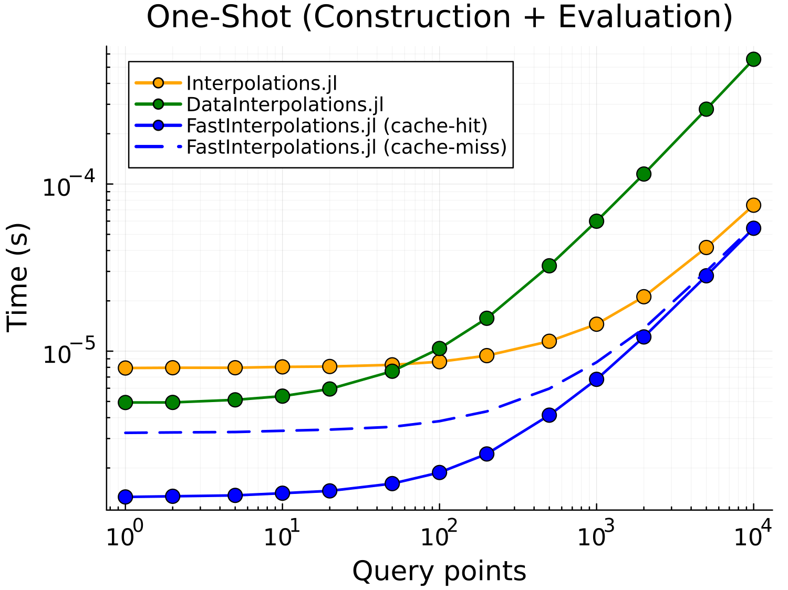

FastInterpolations.jl
A high-performance 1D interpolation package for Julia, optimized for speed and minimal allocations.
Features
- 🚀 Fast: Optimized algorithms outperform other packages
- ✅ Zero-allocation: Auto-managed caching eliminates allocations on hot paths
- 🎯 Simple API: One-shot function call — no intermediate objects
- 📐 Derivatives: Analytical first and second derivatives for cubic splines
Installation
FastInterpolations is registered with FuseRegistry:
using Pkg
Pkg.Registry.add(RegistrySpec(url="https://github.com/ProjectTorreyPines/FuseRegistry.jl.git"))
Pkg.Registry.add("General")
Pkg.add("FastInterpolations")Quick Start
Supports linear and cubic spline interpolation. Works with Range or Vector grids (Range recommended for best performance).
using FastInterpolations
x = range(0.0, 10.0, 100) # or Vector: x = collect(range(...))
y = sin.(x)
# Interpolate at a point
linear_interp(x, y, 5.5)
cubic_interp(x, y, 5.5)
# Interpolate at multiple points
xq = [1.0, 2.0, 3.0]
linear_interp(x, y, xq)
cubic_interp(x, y, xq)
# In-place interpolation for maximum performance and zero-allocation
out = similar(xq)
for step in 1:1000
y = compute_new_values(step) # evolving y over time
linear_interp!(out, x, y, xq) # zero-allocation ✅
cubic_interp!(out, x, y, xq) # zero-allocation ✅ (after first-call)
endAPI Reference
One-shot (construction + evaluation)
| Function | Description |
|---|---|
linear_interp(x, y, xq) | Linear interpolation at point(s) xq |
linear_interp!(out, x, y, xq) | In-place linear interpolation |
cubic_interp(x, y, xq) | Cubic spline interpolation at point(s) xq |
cubic_interp!(out, x, y, xq) | In-place cubic spline interpolation |
Re-usable interpolant
| Function | Description |
|---|---|
itp = linear_interp(x, y) | Create linear interpolant |
itp = cubic_interp(x, y) | Create cubic spline interpolant |
itp(xq) | Evaluate at point(s) xq |
itp(out, xq) | Evaluate at xq, store result in out |
<details> <summary>Examples: When to use each approach</summary>
One-shot: Best when y changes frequently
Use one-shot functions when the same x-grid is reused but y-values evolve over time. The auto-cache ensures zero-allocation after the first call.
# Simulation: x-grid fixed, y evolves each timestep
x = range(0.0, 10.0, 100)
out = zeros(N_query)
for step in 1:1000
y = compute_new_values(step) # y changes every iteration
cubic_interp!(out, x, y, xq) # zero-allocation ✅ (cache hit on x)
endInterpolant: Best when both x and y are fixed
Use interpolant objects when both x and y are constant. Pre-computes coefficients for maximum evaluation speed.
# Lookup table: x and y never change
x = range(0.0, 10.0, 100)
y = sin.(x)
itp = cubic_interp(x, y) # pre-compute once
# Fast repeated evaluation
for query in queries
result = itp(query) # zero-allocation ✅
endIn-place evaluation
Both approaches support in-place evaluation for zero output allocation:
out = zeros(3)
# One-shot in-place
cubic_interp!(out, x, y, [1.0, 2.0, 3.0])
# Interpolant in-place
itp = cubic_interp(x, y)
itp(out, [1.0, 2.0, 3.0])</details>
Allocation Behavior
Designed for zero-allocation on hot paths.
| Method | Scalar | Vector | In-place |
|---|---|---|---|
linear_interp | zero ✅ | output only | zero ✅ |
cubic_interp | zero ✅ (cached*) | output only | zero ✅ (cached*) |
*zero after first call (auto-cached). Julia 1.12+ achieves true zero-allocation; older versions may show minor (~16-64 bytes) overhead.
<details> <summary>Details: How caching works</summary>
Cubic splines require solving a tridiagonal system, which normally allocates working memory. FastInterpolations uses auto-managed caching to eliminate this overhead.
Hot-path optimization: After the first call, repeated interpolations on the same x-grid are allocation-free. Ideal for simulation loops where the grid stays fixed but y-values change.
Multi-grid caching: The cache stores multiple x-grid entries (default: 16), enabling zero-allocation across different grids:
cubic_interp!(out1, x1, y1, query) # caches x1
cubic_interp!(out2, x2, y2, query) # caches x2
cubic_interp!(out1, x1, y1, query) # cache hit → zero-allocationAdjust cache size:
set_cubic_cache_size!(32) # Increase for many distinct grids
set_cubic_cache_size!(4) # Reduce for memory-constrained environments
clear_cubic_cache!() # Clear all cached data</details>
Derivatives
Evaluate analytical derivatives directly—no finite difference approximation needed.
x = range(0.0, 2π, 100)
y = sin.(x)
# One-shot: use deriv keyword
cubic_interp(x, y, 1.0; deriv=1) # First derivative (cos(1.0) ≈ 0.5403)
cubic_interp(x, y, 1.0; deriv=2) # Second derivative (-sin(1.0) ≈ -0.8415)
# Interpolant: use deriv1/deriv2 wrappers
itp = cubic_interp(x, y)
d1 = deriv1(itp) # First derivative view
d2 = deriv2(itp) # Second derivative view
d1(1.0) # Evaluate first derivative at x=1.0
d2.(xq) # Broadcast second derivative over query pointsLinear interpolation also supports deriv=1 (piecewise constant slope).
Performance
Benchmark comparison against Interpolations.jl and DataInterpolations.jl for cubic spline interpolation. See https://github.com/ProjectTorreyPines/FastInterpolations.jl/blob/master/benchmark/ for full results.

One-shot (construction + evaluation) time per call with fixed grid size n=100.
- cache-hit: Reuses cached spline coefficients (same x-grid)
- cache-miss: Fresh construction every call (like other packages)
License
Apache License 2.0